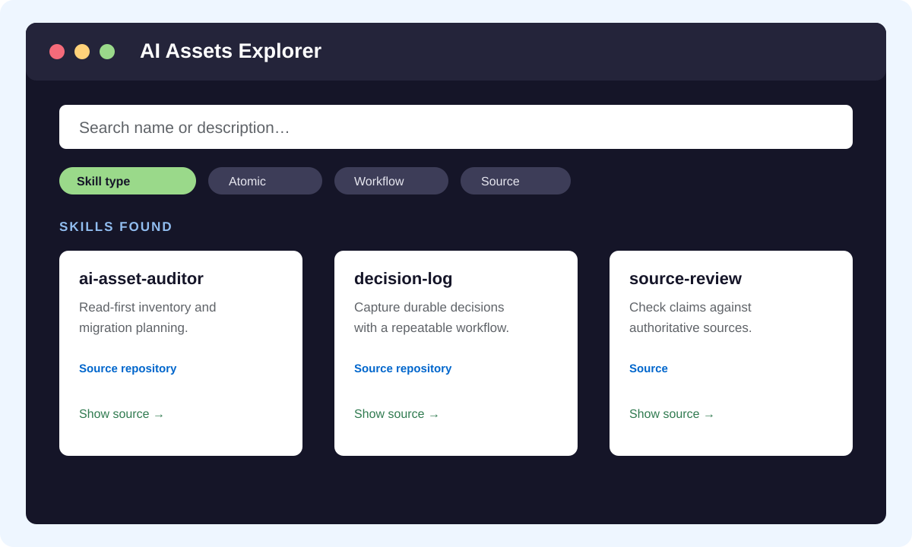
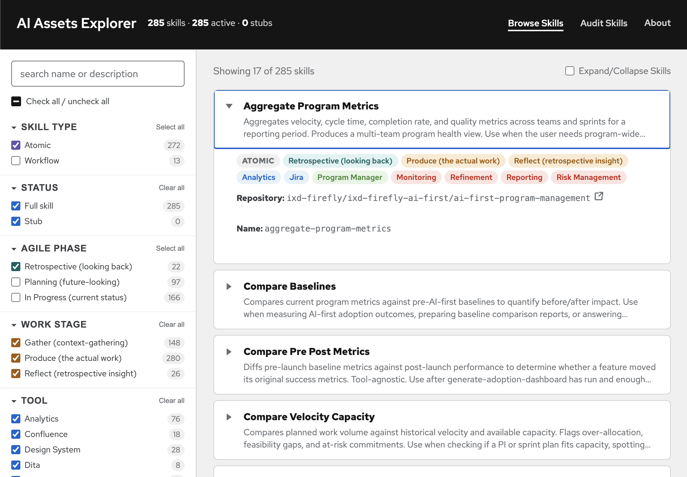
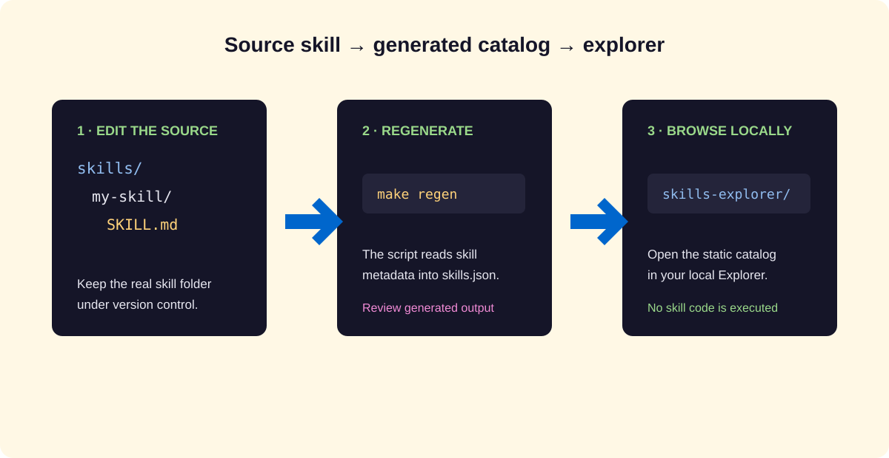

Browse
Search by name, description, source grouping, or trigger text to find a relevant skill.
Guide 4 · Skill catalog
Your setup assistant prepares and opens AI Assets Explorer so you can browse your local skills and trace them to their sources. When you find one you want to use, ask the assistant to help you install or run it.

What it is
The explorer reads skills.json to show searchable names, descriptions, capability groupings, and source repositories. Each skill’s SKILL.md and supporting files stay in its source folder.
Search by name, description, source grouping, or trigger text to find a relevant skill.
Use the Source repository filter to narrow the catalog to labels such as ixd-firefly or tailwind.
Browsing leaves skills unchanged and does not install or run them. Each agent still has its own rules for finding skills.

Source files
The assistant runs the generator, which reads each resolved SKILL.md and builds your catalog. Guided setup saves the result in ~/.local/share/ai-assets-explorer/, alongside your local app. The catalog is generated from your skills and stays on your computer. If an entry looks wrong, ask the assistant to check the source and refresh it. The skills-local.json audit file contains absolute paths and stays on your machine.

Try the Explorer demo with fictional skills.
Guided setup
The agent-setup workflow prepares the Explorer after organizing your assets. Your assistant uses the skills folder identified during setup, builds the catalog, opens it locally, and helps you find a skill to use. You don’t need to choose a data folder or run the generator yourself.
Your assistant first checks existing configuration, known skills folders, and installed packages, then asks about custom locations it could not find. It uses those findings to recommend the folder your Explorer will scan. If you have no skills yet, you can start with an empty catalog.
Keep it current
Ask your assistant to update a skill at its source and refresh the catalog. It checks that the name, description, and source are correct in the Explorer. Marketplace packages stay under their installer’s control.
Browse Skills helps you find an entry. Audit Skills shows issues in the configured folder, such as broken links. Ask the assistant to investigate an issue or help you use a skill; opening a card does not run it.
Boundaries
The assistant checks how your chosen tool discovers skills and verifies that it can find them. The compatibility matrix explains the paths and runtime constraints behind those checks.
Ask your setup assistant to make a selected skill available in the tool you use. It handles the installation or linking; the Explorer provides the catalog.
The assistant updates descriptions and procedures in the source skill’s tracked folder, then refreshes the catalog. The Explorer displays those changes.
Opening a card does not run its scripts. The local source-file button asks the preview server to show an inventoried file in your file manager. Use your configured agent or tool to review and run the skill.